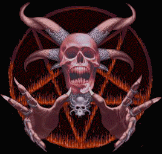

0wn3d by Furia.br

Vergonha! Não seria fácil falarmos sobre o governo Fernando Henrique Cardoso se não falarmos da palavra: “Vergonha”! Não que tenhamos “Vergonha” de sermos brasileiros, muito pelo contrário, somos orgulhosos da nossa “Terra Brasilis”, mas nosso país, infelizmente não é só um aglomerado de terras, com um belo conjunto de pessoas, florestas, animais, paisagens. É um conjunto de “bandalheiras” políticas que nos rodeiam a cada dia. O que é anunciar o aumento do salário mínimo com seis meses de antecedência? Será que é para deixar os velhinhos da previdência social que dependem de um salário mínimo para sobreviver, ficarem mais contentes, porque assim eles podem se programar quem sabe para uma viagem como aumento de aproximadamente de R$ 10,00? Acreditamos que para uma viagem para o alem! Com esse aumento irrisório, só a morte servirá para um aposentado que gasta em média por mês mais de R$ 500,00, só com medicamentos. Então como não falarmos no FHC se não falarmos em VERGONHA!!!!! Mas isso tudo é reflexo de uma nação que ainda não sabe escolher os seus governantes. Será que o brasileiro sabe vota? Fica aqui o questionamento!!!!